요추운동 프로그램
1단계 : 올바른 허리 자세와 요추안정화
목표: 요추안정화, 요추 운동조절능력 향상
개요: 요추부 척추를 ’최적의 전만자세’로 항상 유지할 수 있도록, ’최적의 복부고정’법을 사용할 수 있도록, 일상생활에서 요추안정화를 유지하는 운동조절능력을 키울 수 있도록 교육한다.
운동 종류:
- 요추전만
- 최적 전만각도 찾기
- 맥킨지 신전운동
- 복부고정
- 적절한 힘주기
- 간헐적 자연복대 운동
- 자연복대 유지하고 걷기
- 일상생활훈련
- 일상생활동작에서 요추전만과 복부고정 유지
- 스쿼트와 런지 응용
- 요추전만
참고사항
- 요추 전만
- 요추의 적절한 전만각도가 디스크질환(내장증, 탈출, 파열, 부골화)의 자연회복을 위한 필수 자세이다.
- 전만자세가 후방섬유륜을 붙이고, 수핵을 앞으로 밀어 낸다.
- 신경쓰지 않아도 전만자세가 유지되도록 “습관화” 시켜야한다.
- 일반적으로 새로운 습관을 익히는 시간은 대략 2~3달이다.
- 정상 전만각도는 사람마다 다르므로 자신에게 맞는 각도를 찾아야 한다.
- 골반경사가 사람마다 다르기 때문이다.
- 정상범위는 대략적으로 30 ~ 80도이다.
- 요추의 적절한 전만각도가 디스크질환(내장증, 탈출, 파열, 부골화)의 자연회복을 위한 필수 자세이다.
- 복부고정법
- 디스크는 손상시키지 않으면서 척추안정성은 유지하는 정도의 힘을 주는 것이 필요하다.
- 개인에 따라, 혹은 손상 초기에는 복부고정법 정도의 약한 힘으로도 디스크 회복을 지연시킬 수 있으므로, 꼭 힘이 많이들어가지 않는 것이 중요하다.
- 최대등척수축힘(MVIC)의 5~10% 정도의 약한 힘이 필요하나, 측정센서가 없으므로 가벼운 헛기침을 하는 정도의 힘을 준다.
- 처음에는 환자가 직접 배꼽 양옆에 손을 대고 힘을 느끼도록 한다.
- 디스크는 손상시키지 않으면서 척추안정성은 유지하는 정도의 힘을 주는 것이 필요하다.
- 나쁜 운동 알려주기
- 윌리엄스 굴곡 운동 등 굴곡 스트레칭
- 윗몸일으키기 종류 중 강도가 센 것
- 진도에 따라 다르다.
손상 직후 혹은 유전적으로 약한 사람은 걷기 이외에는 모두 나쁠 수 있다.
젊고 유전적으로 튼튼한 사람에게는 윗몸일으키기도 이로울 수 있다.
운동 중, 운동 직후, 운동 다음날 아침까지 통증이 없어야 해롭지 않은 운동이다.
자신에게 맞는 적절한 전만자세를 찾고 유지하는 것 (Find sweet spot of lumbar lordosis)
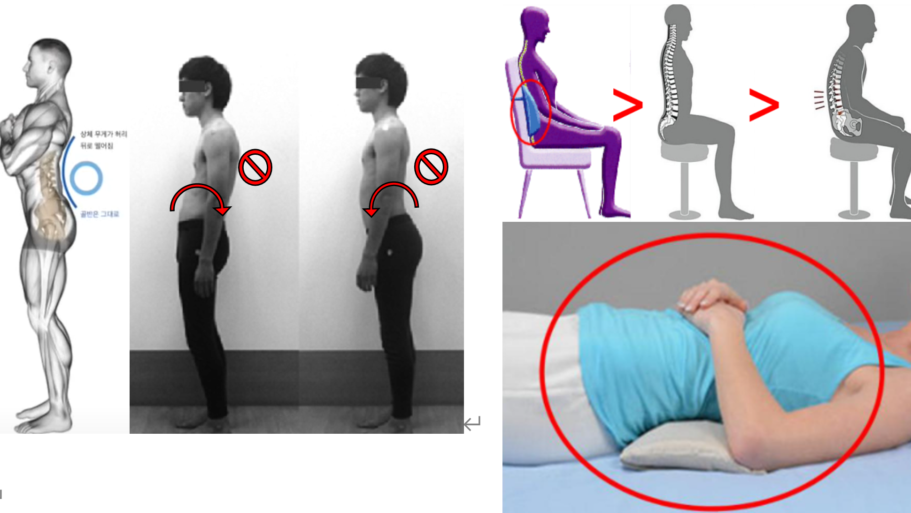
1. 다리를 어깨 넓이만큼 벌리고 바로 섭니다.
2. 배가 볼록하고 등이 오목한 자세가 요추 전만자세 입니다.
3. 골반을 앞뒤로 돌리지 말고 가슴을 활짝 펴 흉곽을 뒤로 보내어 요추전만을 만듭니다.
4. 턱은 당기지 않아 고개와 시선은 전방을 향하고, 귀(머리의 무게중심)가 항문(골반의 무게중심)보다 뒤로 가도록 합니다. 적절히 시행되면 허리 근육의 긴장감이 느슨해집니다.
5. 앉을 때는 등받이에 기대어 전만을 받쳐주는 쿠션을 사용하고, 등받이가 없다면 복부고정법을 사용하고 오래 앉지 않습니다.
6. 누울 때는 딱딱한 침대나 너무 푹신한 침대보다는 전만을 받쳐주는 적절히 푹신한 침대를 사용하며, 허리베개을 사용 해볼 수 있습니다.
엎드려서, 앉아서, 서서하는 맥켄지 신전운동 (Mckenzie’s extension exercise; prone, sitting, standing)
❗신전 운동 중 통증악화 없어야 함(후관절통증, 방사통).
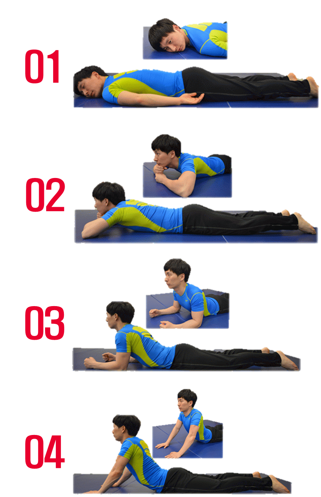
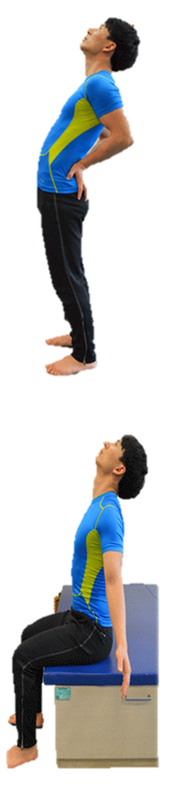
앉으나(사무활동, 공부, 운전), 서나(외부활동, 집안일), 엎드려서(자기 전에, 아침에 깼을 때), 수시로 맥켄지 신전운동을 합니다.
척추전만이 무너진 것을 알아차리면 곧바로 본인의 현재자세에 맞는 신전운동을 하고 전만자세로 돌아옵니다.엎드려서 하는 맥킨지 신전운동 : 5분 간의 복식 호흡에도 통증이 완전히 없는 제일 높은 단계를선택하여 시행합니다.
1단계 : 엎드려 누워서 고개를 돌리고 심호흡
2단계 : 양손을 야구배트 잡듯이 주먹을 쥐고 포개어 턱 아래 받치고 심호흡
3단계 : 팔을 플랭크 하듯이 어깨너비로 팔꿈치를 90도 굽혀 상체를 지탱하며 심호흡
❗ 등에 과도한 힘이 들어가지 않도록 주의4단계 : 팔꿈치를 펴 상체를 일으켜 심호흡
❗ 과전만이 예상되면 안해도 됨
앉거나 서서하는 맥킨지 신전운동
견갑골을 뒤에 붙이고 배를 앞으로 내밀면서 천장을 봅니다.
통증이 유발되지 않는 최대 신전 범위까지만 시행합니다.
5~10초 간 유지 후 원래자세로 돌아옵니다.
코어근육을 사용하는 복부고정법 (abdominal bracing)
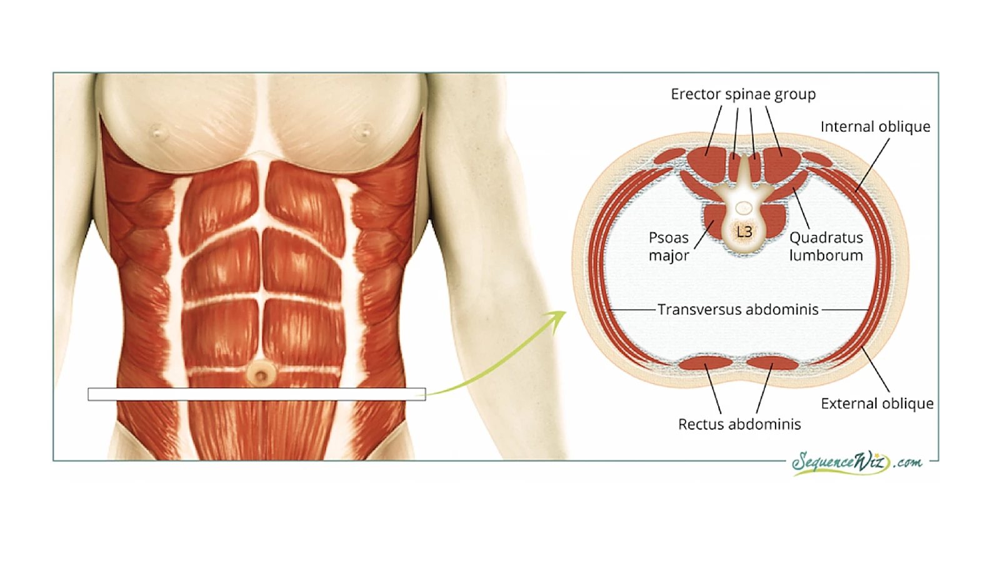
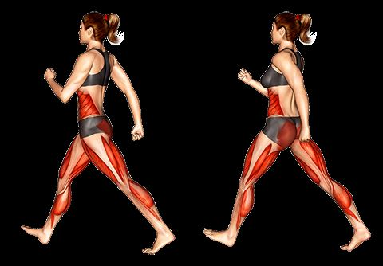
다리를 어깨 넓이만큼 벌리고 바로 서거나 앉아서 요추전만을 만듭니다.
배와 허리주변 근육들에 헛기침할 때 들어가는 정도의 가벼운 힘을 줍니다.
간헐적 복부고정 운동 (Intermittent AB)
- 요추전만을 유지한 채 배꼽 양쪽에 손을 대고 복부근육의 힘을 느낍니다.
- 5초 힘주고 5초 힘빼기 운동을 30~50회 시행합니다.
- 하루 3회 수행합니다.
복부고정법으로 걷기 (Walking with AB)
- 요추전만과 복부고정을 유지한 채 가슴을 펴고 전방을 봅니다.
- 발 뒤꿈치부터 바닥에 닿도록 경쾌한 속도로 걷습니다.
- 무릎은 곧게 편다는 느낌으로 조금만 구부리고, 11자 모양으로 걷습니다.
- 통증이 없는 시간 혹은 거리 범위 내에서 걷습니다.
2단계 : 일상생활 중의 통증에서 벗어나기
목표: 골반회전 운동조절능력 향상, 흉요근막 강화
개요: 일상생활 중 지속된 통증에서 벗어나 3~4 점 이하의 중등도~경한 통증으로 줄어든 경우, 광배근과 둔근의 운동을 통해 흉요근막을 강화하여 추가적인 요추 안정화를 얻고, 골반의 후방회전을 제한하고 고관절을 사용하는 방법을 익힌다.
운동 종류: 힙앱덕션, 시티드로우, 얕은 스쿼트
참고사항
흉요근막 이해시키기 : 흉요근막은 광배근과 둔근은 흉요근막을 통해 상하체의 힘을 서로 전달해주며, 허리를 뒤에서 받쳐주어 코어안정화에 중요한 구조물이다.
얕은 스쿼트 하는 이유 : 골반경첩(hip hinge) 사용 연습을 하면서 골반후방경사(butt wink) 발생은 제한하기 위해서이다. 개인의 고관절 모양에 따라 골반의 회전이 일어나는 시기는 다를 수 있다.
힙앱덕션 하는 이유 : 엉덩이 근육 운동중에서는 척추의 시상면 상의 움직임을 유발하는 레그익스텐션(대둔근) 운동보다 허리를 고정하고 수평방향으로 운동하는 힙앱덕션(중둔근) 운동으로 시작하는 것이 좋다. 머신으로 시작하면 가장 안정적이나 밴드도 사용가능하다. 힙어브덕션은 장요근을 동원시키므로 현 단계에서는 해로울 수 있다.
포티 스쿼트를 활용한 하체운동 과 고관절 운동조절능력 향상(hip hinge motor-control and potty squat)
❗ 욕심내어 깊이 앉아 엉덩이 윙크가 일어나지 않도록 주의
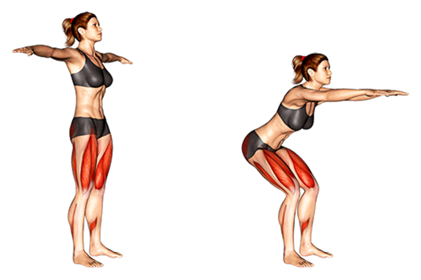
준비자세 : 다리를 어깨넓이로 바로 선자세에서 기본자세를 유지하고 복부고정을 시행한다.
얕게 앉기 : 고관절만을 사용하여 엉덩이를 뒤로 빼며 살짝 앉는 스쿼트(20 ~ 30도만)를 수행
무릎은 발끝보다 앞으로 나가지 않도록 주의하고 팔을 앞으로 내밀어 균형을 잡습니다.
일어서기 : 엉덩이 근육을 서로 모은다는 느낌으로 몸을 일으키며 원래자세로 돌아옵니다.
8~15회 3세트 수행합니다.
힙앱덕션을 통한 둔근 강화 (hip abduction - gluteus strengthening)
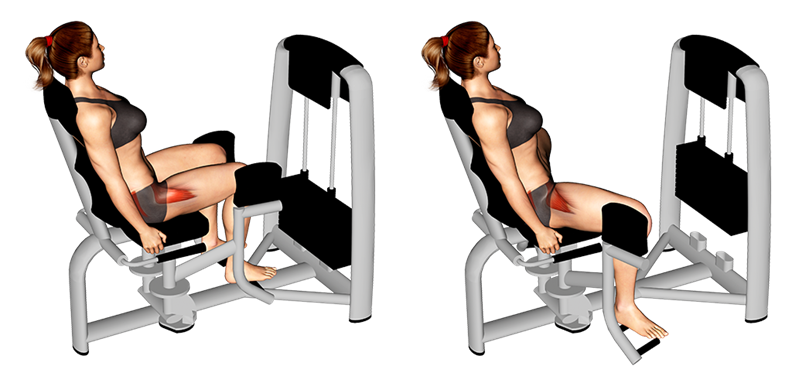
집에서 탄성밴드로 간단히, 시간이 되면 기계를 사용하여 하는 것이 안정성 면에서 좋습니다.
요추전만 : 허리를 지지해주는 의자에 요추전만을 유지하고 앉는다.
다리 벌리기: 요추전만이 무너지지 않고, 상체의 힘이 많이 들어가지 않는 범위와 저중량으로 수행한다.
8~15회 3세트 수행한다.
천천히 수행하고 세트간 1~2분 휴식한다.
근피로가 느껴지면 멈추며, 고중량 혹은 고반복을 사용하여 수축불능이 올때까지 하면 안된다.
시티드로우를 통한 광배근 강화 (Seated row - Lattisimus dorsi strengthening)
❗욕심내어 광배근 전범위를 사용하여 운동하려고 허리를 사용하지 않는다.
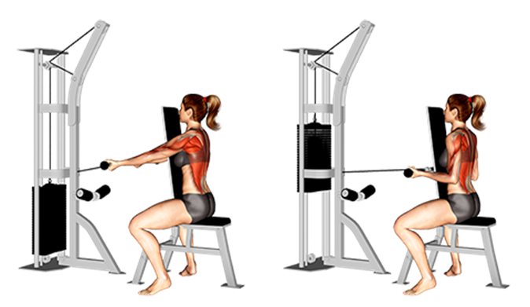
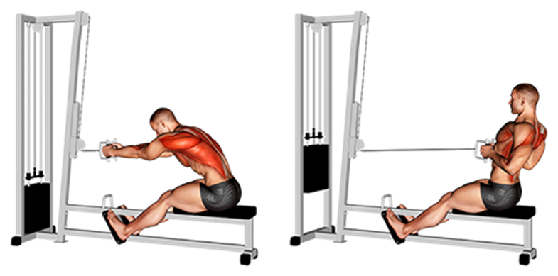
| 올바른 방법 | 잘못된 방법 |
|---|---|
요추전만 : 체간을 지지해주는 의자에 기대어 요추전만을 유지하고 앉는다.
노젓기 운동 : 상체가 앞뒤로 움직이지 않도록 광배근의 제한된 범위만을 사용하여 케이블 혹은 밴드를 당겼다가 천천히 놓는다.
8~15회 3세트 수행한다.
천천히 수행하고 세트간 1~2분 휴식한다.
근피로, 고중량 및 고반복을 피한다.
3단계 : 건강한 허리로 회복하기
목표: 요추 주변근육 강화, 레저스포츠 복귀
개요: 가벼운 운동에도 통증이 유발되지 않거나 1~2점 정도의 통증만 남은 단계이지만, 여전히 안정적인 체간자세를 유지한 채로 강화운동을 하는 것이 필요.
운동 종류: 버드독운동, 플랭크, 레저스포츠
참고사항
- 50대 이상은 굳이 추가적인 강화운동은 하지 않고 요추전만과 자연복대를 잘 유지 할 수 있으면 된다.
- 버드독 자세에서 준비운동으로 시행하는 유연성 운동(cat-camel exercise)은 추간판 손상 환자에서는 시행하지 않는다.
❗어깨나 골반이 한쪽으로 돌아가거나, 팔다리가 등보다 위로 올라가지 않도록 주의합니다.
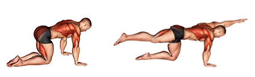
허리자세에 유의하면서 네발 엎드린 자세를 취합니다. 이 때 양손과 무릎은 어깨 너비만큼 벌립니다.
양 손은 바닥을 미는 힘을 주며 등을 약간 올려주고, 허리는 약간 내려간 전만자세를 유지합니다.
허리근육에 힘을 준다는 느낌으로 체간이 움직이지 않도록 하면서 왼쪽 팔과 오른쪽 다리를 천천히 올려주세요.
(❗불안한 경우 : 팔 혹은 다리를 2~3cm 만 들어봐서 통증이 유발되는지 체크. 괜찮으면 한쪽 다리만 수평으로 들어보고 통증이 유발되는지 다시 체크. 괜찮다면 마지막으로 대각선 팔다리를 들어서 통증유발을 체크, 통증이 없다면 진행)
5초간 유지한 후, 팔다리를 내리고 5초간 휴식하고, 반대쪽 팔과 다리를 같은 방법으로 실시합니다.
8~15회 3세트 시행합니다.
❗엉덩이가 절대 올라가지 않도록 하고 통증이 생기면 멈춥니다.
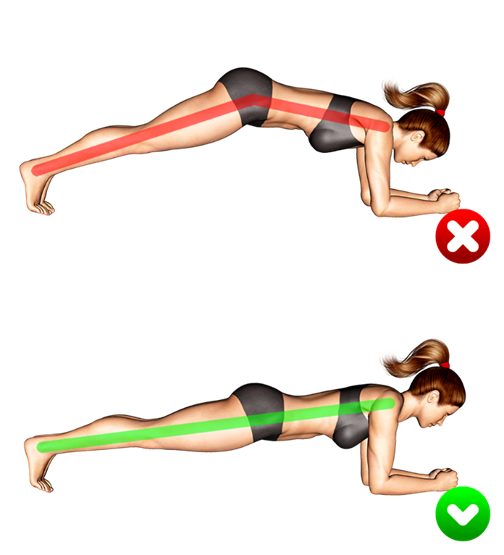
허리자세에 유의하면서 네발 엎드린 자세를 취합니다. 이 때 양 팔꿈치는 어깨 너비만큼 벌리고 발은 모읍니다.
양 팔꿈치는 바닥을 미는 힘을 주며 등을 약간 올려주고, 허리는 약간 내려간 전만자세를 유지합니다.
근피로가 오거나 자세가 무너지기 전에 멈춥니다.
가벼운 레저스포츠 및 무리되지 않는 코어 근육 강화 운동
평소 즐기던 가벼운 구기종목, 접영을 제외한 수영, 라켓스포츠 등을 시작해 볼 수 있습니다. 다만 새로 배워서 하는 경우에는 큰 주의가 필요합니다.
본인이 나이가 많고, 오래 아팠고, 심한 디스크 퇴행을 여러 개 가지고 있다면, 더 심한 강화운동이나, 새로운 스포츠를 배우는 것은 앞으로도 하지 않는게 좋을 수 있습니다.
교각운동(브릿지), 체간 측부 근육 강화운동(사이드브릿지), 복직근 운동(컬업)등도 통증 없는 범위에서 시행해 볼 수 있습니다.
회전근개 재활 프로그램
1단계 : 일상생활 중의 통증에서 벗어나기
- 목표: 어깨관절 유연성, 견갑골 주변근육 유연성, 체간 자세 회복.
- 운동: 견갑골 뒷당김 운동, 견갑골 시계 운동, 어깨관절가동범위 운동
- 개요: 어깨관절과 견갑골 주변근육의 유연성회복과 활성화를 위한 스트레칭 운동 및 어깨 거들(shoulder girdle)을 정상 자세로 회복시키고, 라운드숄더를 교정.
- 참고사항:
- 직접 견갑골 뒤에 손을 대고 환자가 인식하도록 교육할 수 있다.
- 견갑골 유연성, shoulder LOM, Dyskinesia 체크해볼 수 있다.
견갑골 스트레칭으로 유연성과 바로 선 자세를 회복 (enhance scapular flexibility and muscle activation)
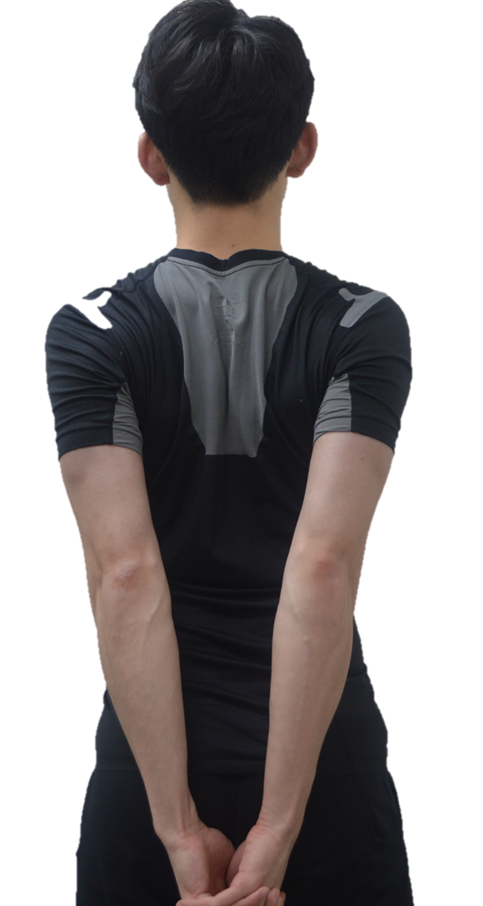


다리를 어깨너비 만큼 벌리고 시선은 전방을 향하고, 바로 서거나 앉습니다.
가슴을 활짝펴고 중립자세를 취합니다.
손을 허리 뒤에서 모으며 견갑골을 끝범위까지 뒷당김을 시키고 10초 동안 유지하고 원래자세로 돌아옵니다.
앞당김, 상승, 뒷당김, 하강을 시계방향으로 순차적으로 시행하는 견갑골 시계운동을 합니다.
손상되고 비구조적인 근육과 힘줄을 원래 방향으로 회복시키기 위한 스트레칭 (static passive Rotator cuff stretching)
(대부분) 극상근-극하근 손상환자의 경우
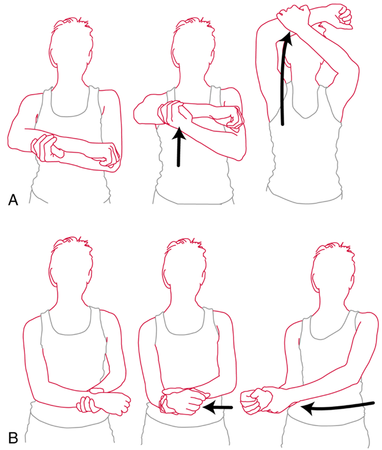
- 앞으로 올리기 (flexion)
눕거나 앉은 자세에서 반대쪽 손으로 환측 팔을 잡고 천천히 위로 올립니다.
통증이 없는 범위까지 올린 후 10초간 유지합니다.
10회 반복합니다.
- 외회전 (External rotation)
누운 상태에서 팔뒤에 배게를 받치고, 45도 내회전 상태에서 천천히 외회전 시킵니다.
통증이 없는 범위까지 회전시킨 후 10초간 유지합니다.
10회 반복합니다.
2단계 : 유연하고 튼튼한 견갑골 주변근육
목표: 견갑골 주변 근육 강화, 전거근 활성화
운동: 견갑골 딥스, 견갑골 플러스업, 전거근 활성화
개요: 충분히 견갑골의 가동성을 회복했다면, 조심스럽게 견갑골 주변근육의 강화운동을 시행합니다. 견갑골의 기울임을 담당하는 전거근을 인식합니다.
운동교육: 전거근은 견갑골을 기울여 후방경사를 만들고, 견갑골을 안정화하는 역할이다.
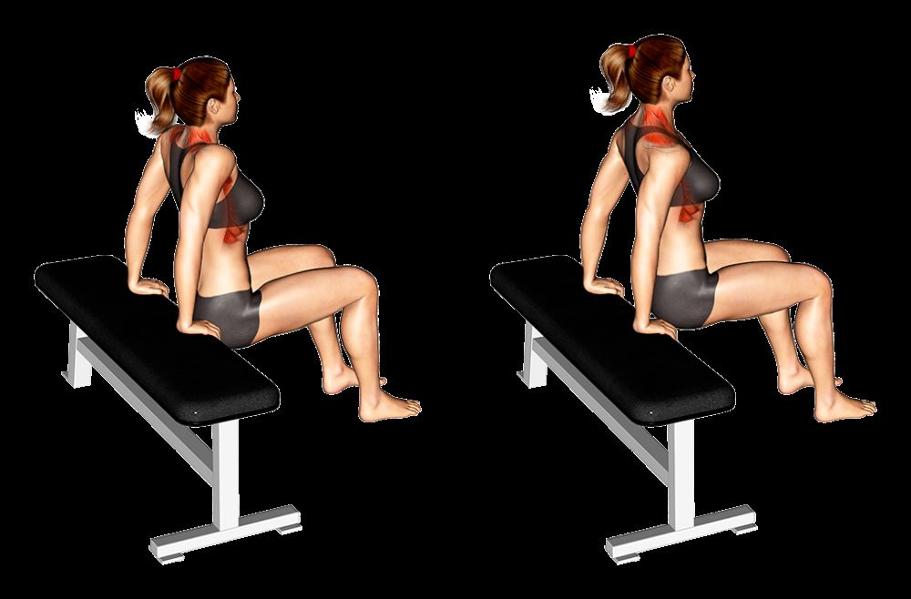
견갑골을 뒤로모은 상태에서 팔꿈치를 굽히지 않도록 주의하고 의자 손잡이나 테이블을 잡는다.
체중을 견갑골에 싣고 다리로는 중심을 잡을 정도로만 바닥에 대고 있는다.
견갑골을 최대한 위로 올렸다가 의자를 누르면서 견갑골을 최대한 아래로 내린다.
팔꿈치가 굽혀지지 않도록 주의하며 8~15회 3세트 수행한다.
천천히 수행하고 세트간 1~2분 휴식한다.
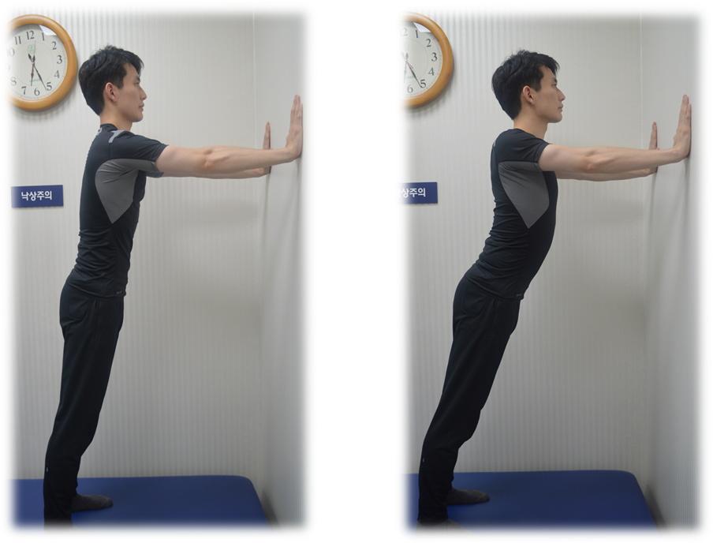 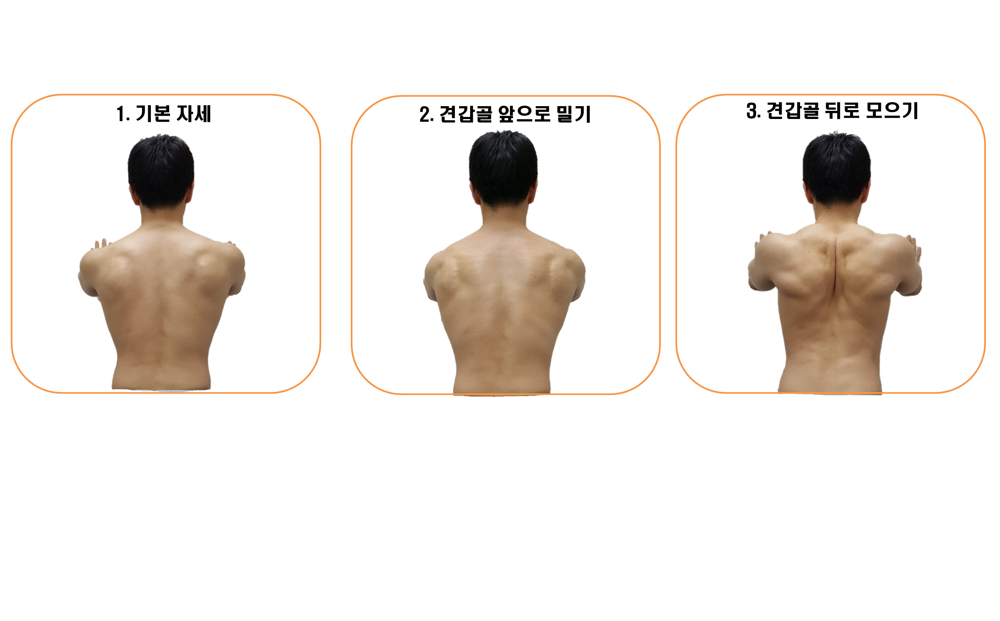
벽에서 조금 떨어져 팔과 다리를 어깨너비로 벌리고 양손으로 벽을 짚는다.
견갑골을 사용하여 벽을 밀었다가 다시 다가가는 푸쉬업을 한다.
팔꿈치가 굽혀지지 않도록 주의하며 8~15회 3세트 수행한다.
천천히 수행하고 세트간 1~2분 휴식한다.
벽에서 발이 점점 멀어지도록 하거나, 테이블 위에 손을 둔 상태로 발을 점점 멀리하면서 저항을 높혀 시행할 수 있다.
❗어깨에 통증이 느껴지면 시행하지 않는다.

엄지를 9시 방향으로 하고 팔을 90도 들어서 벽에 댄다.
엄지를 11시 방향으로 회전시킨다.
이때 견갑골을 뒤로 눕히는 느낌 혹은 겨드랑이까지 앞쪽이 향하게 한다는 느낌으로 시행하며 활성화 되는지 확인한다.
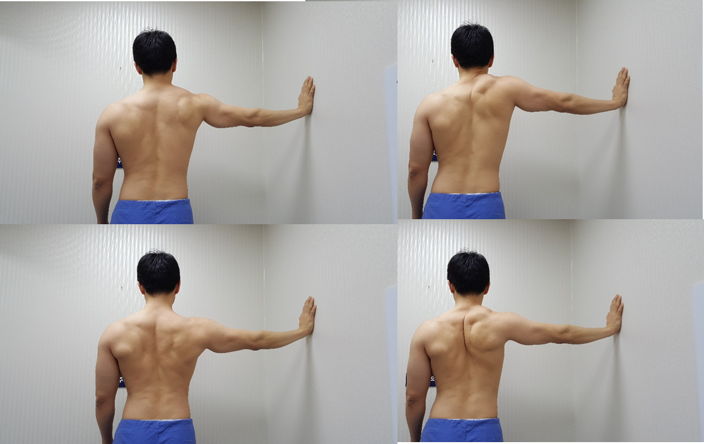
1단계의 견갑골 시계운동을 팔을 90도 들어서 벽에 대어 시행한다.
8-15회 3세트 시행하고, 세트간 1~2분 휴식한다.
(통증없이 수행 가능하면) 1-3kg의 아령을 들고 시행한다.
3단계 : 회전근개 건강 회복하기
목표: 회전근개 강화 운동 축부하 AROM
운동: Wall roll, wall ball clock, blackburn
개요: 튼튼하고 유연한 견갑골이 지지해주는 것을 바탕으로 갓 회복한 회전근개를 강화하여 손상 위험에서 벗어납니다.
운동교육 > blackburn과 butterfly에서는 견갑골을 먼저 활성화시키고, 회전근개가 따라오도록 하는 운동조절 교육
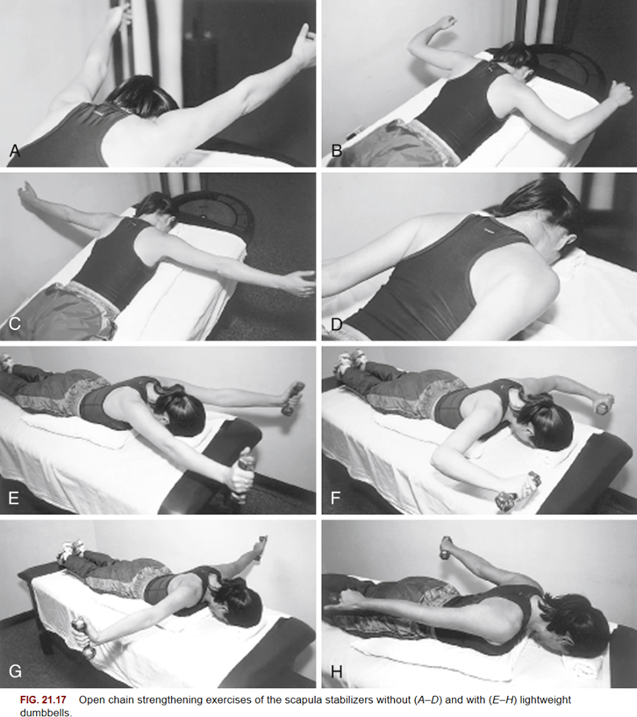
이마를 대고 자연스럽게 엎드린다.
팔을 몸통 옆에 둔 채로 견갑골을 뒤로 먼저 당긴 후 팔을 들고 5초간 유지한하고 내린다.
팔을 양옆으로 90도 벌려 T자 모양을 만들고 견갑골을 뒤로 당긴 후 팔을 들었다가 내린다.
팔을 T자 모양으로 유지하고, 엄지가 하늘을 향하게 팔을 외회전 한 후 같은 방식으로 시행한다.
팔을 W자 모양, Y자 모양으로 놓고 각각 2-3의 방법으로 시행한다.

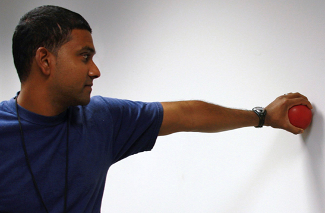
Wall Roll(flexion), Wall ball clock